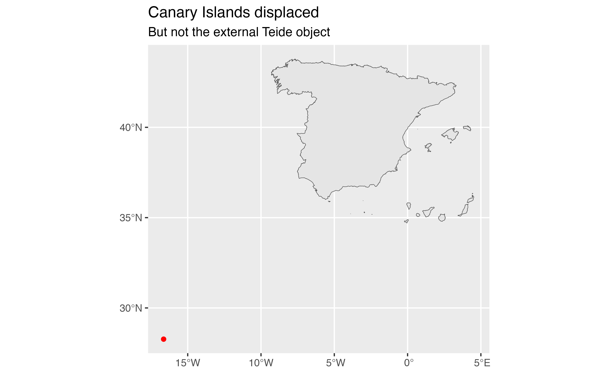
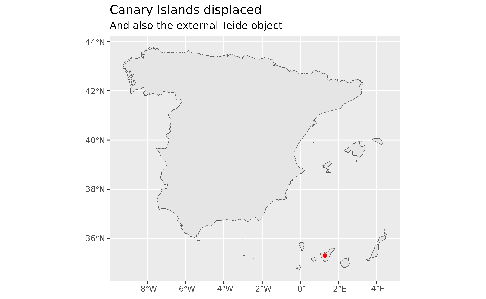

Helper function to displace an external sf object (potentially
representing a location in the Canary Islands) to align it with the objects
provided by sf with the option moveCAN = TRUE.
Arguments
- x
An
sfobject. It may besforsfcobject.- moveCAN
A logical
TRUE/FALSEor a vector of coordinatesc(lat, lon).
Value
A sf object of the same class and same CRS than x
but displaced accordingly.
Details
This is a helper function that intends to ease the representation of objects located in the Canary Islands that have been obtained from other sources rather than the package mapSpain.
See also
Other Canary Islands:
esp_get_can_box()
Examples
library(sf)
teide <- data.frame(
name = "Teide Peak",
lon = -16.6437593,
lat = 28.2722883
)
teide_sf <- st_as_sf(teide, coords = c("lon", "lat"), crs = 4326)
# If we use any mapSpain produced object with moveCAN = TRUE...
esp <- esp_get_country(moveCAN = c(13, 0))
library(ggplot2)
ggplot(esp) +
geom_sf() +
geom_sf(data = teide_sf, color = "red") +
labs(
title = "Canary Islands displaced",
subtitle = "But not the external Teide object"
)

# But we can
teide_sf_disp <- esp_move_can(teide_sf, moveCAN = c(13, 0))
ggplot(esp) +
geom_sf() +
geom_sf(data = teide_sf_disp, color = "red") +
labs(
title = "Canary Islands displaced",
subtitle = "And also the external Teide object"
)
